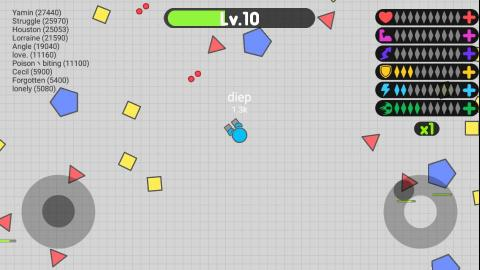

Diep.io is a top-down tank battle game where players upgrade their tanks with various abilities to dominate the battlefield. With multiple tank classes, hundreds of upgrade combinations, and diverse game modes, Diep.io offers deep strategic gameplay. This guide covers everything from basic tank mechanics to optimal build paths that will help you climb the leaderboards.
🎯 Game Basics

Objective
In Diep.io, your goal is to destroy enemy tanks and shapes to earn points and level up your tank. As you level up, you can choose upgrades that enhance your tank's capabilities. The player with the most points at the end wins.
The Shapes System
- Squares - Basic enemies, easy to destroy, minimal points
- Triangles - Faster movement, moderate points
- Pentagons - High health, valuable points, sometimes appear in groups
- Spawning Shapes - Alpha Pentagon, Alpha Square - rare, high-value targets
Leveling System
Destroy shapes and enemies to gain experience. Each level grants you one upgrade point that you can invest in one of five categories:
- Health - Maximum health and regeneration
- Body Damage - Damage dealt by ramming into enemies
- Movement Speed - How fast your tank moves
- Bullet Speed - How fast your projectiles travel
- Bullet Damage - Damage dealt by your bullets
🎮 Tank Classes

Base Tank (Tier 1)
Every player starts with a basic tank featuring one cannon and basic movement. This tank has no special abilities but serves as the foundation for all advanced classes.
Tank Trees (Tier 2-4)
At Level 30, you can evolve into specialized classes:
- Twin - Two cannons for double firepower
- Smasher - Heavy armor and body damage
- Sniper - Long-range precision attacks
- Medium Tank - Balanced stats
- Flank Guard - Two side-mounted cannons
Advanced Classes (Tier 3-5)
Further evolution unlocks powerful classes like:
- Destroyer - Powerful but slow projectiles
- Annihilator - Massive projectiles that deal devastating damage
- Overlord - Controls drone minions
- Necromancer - Spawns squares from fallen enemies
- Manager - drone control mechanics
📈 Upgrade System
Stat Categories
Each upgrade category has 7 levels (0-7). Higher levels provide diminishing returns, so strategic allocation is crucial.
Upgrade Priorities by Class
- Bullet Classes - Prioritize Bullet Speed, Bullet Damage, Reload
- Body Damage Classes - Prioritize Body Damage, Movement Speed, Health
- Drone Classes - Prioritize Drone Speed, Drone Health, Drone Damage
Don't spread your points too thin. Focus on 2-3 categories relevant to your tank class for maximum effectiveness.
⚡ Best Build Paths
1. Sniper Build
Focus: Bullet Speed, Reload, Health
This build maximizes long-range capabilities. Stay at the edge of combat and pick off enemies from safety. Perfect for players who prefer a tactical approach.
2. Destroyer Build
Focus: Bullet Damage, Movement Speed, Health
Heavy firepower with mobility. Land devastating shots while maintaining the ability to reposition quickly. Great for aggressive playstyles.
3. Smasher Build
Focus: Body Damage, Movement Speed, Health, Max Health
The ultimate ramming build. Sacrifice firepower for overwhelming body damage. Ram through enemies with your spiked armor.
4. Flank Guard Build
Focus: Bullet Speed, Bullet Damage, Reload
360-degree coverage with side cannons. Overwhelm opponents with fire from multiple angles. Difficult to flank.
🎮 Game Modes
Team DM
Free-for-all deathmatch where everyone competes individually. Classic gameplay that tests all-around skills.
2 Teams
Blue vs Red teams. Coordinate with teammates to dominate the opposition. Strategy and teamwork are essential.
4 Teams
More chaotic team battles with four factions. Form temporary alliances and betray rivals for victory.
Maze
Navigate through a maze while fighting. Limited visibility creates tense ambush opportunities and tactical gameplay.
🎯 Combat Strategies
1. Positioning
Always be aware of your surroundings. Position yourself where you can see enemies coming but they can't easily hit you. Corners and edges provide natural cover.
2. Movement Patterns
Don't stay still! Constant movement makes you harder to hit. Combine forward movement with strafing to create unpredictable firing angles.
3. Target Priority
Focus on:
- Low-health targets for easy kills
- Low-level tanks for quick points
- Shape clusters for efficient farming
4. When to Retreat
Know when to run. If you're heavily damaged and outnumbered, retreat to regenerate health before re-engaging.

💎 Pro Tips
Control the pentagon field. Pentagons are valuable farming spots. Control these areas to level up faster than opponents.
Don't overextend. Aggressive plays can backfire. Play conservatively until you're confident in your upgrades.
Use shapes as shields. Position shapes between you and enemy fire. Destroy the shape at the right moment to block bullets.
Learn drone patterns. If playing drone classes, master controlling multiple drones without leaving yourself vulnerable.

❓ Frequently Asked Questions
What's the best tank class for beginners?
The Twin class is excellent for beginners. Its dual cannons provide steady damage output while teaching bullet timing. Alternatively, the Medium Tank offers balanced stats for learning the game.
How do I unlock new tank classes?
Reach Level 30 with your tank, then choose an evolution path. Each class has different evolution options based on your upgrade focus.
What upgrades should I prioritize first?
Start with Movement Speed and Health for survivability. Then focus on your primary damage source (Bullet Damage for shooters, Body Damage for rammers).
How do I counter Overlord and other drone classes?
Use high bullet speed and burst damage. Get close enough that drones can't intercept your shots, then focus fire. Sniper builds are particularly effective.
Is there a maximum level?
The maximum level is 45. Reaching this requires extensive gameplay and smart upgrade choices. Focus on reaching 30 first to unlock class evolution.
📝 Conclusion
Diep.io offers deep strategic gameplay with its upgrade system and diverse tank classes. The key to success is understanding your chosen class's strengths and building around them. Use this guide to find the perfect build for your playstyle.
Ready to dominate the battlefield? Jump into a game and experiment with different builds. For specific build recommendations, check out our Diep.io Best Tank Builds guide!
Last updated: January 18, 2024
Written by the iogameguide.com team